A quick tour of mclustAddons
Luca Scrucca
03 Dec 2025
mclustAddons.RmdIntroduction
mclustAddons is a contributed R package that extends
the functionality available in the mclust package
(Scrucca et al. 2016, Scrucca et al. 2023).
In particular, the following methods are included:
density estimation for data with bounded support (Scrucca, 2019);
modal clustering using modal EM algorithm for Gaussian mixtures (Scrucca, 2021);
entropy estimation via Gaussian mixture modeling (Robin & Scrucca, 2023).
This document gives a quick tour of mclustAddons (version 0.10). It was written in R Markdown, using the knitr package for production.
References on the methodologies implemented are provided at the end of this document.
library(mclustAddons)
## Loading required package: mclust
## Package 'mclust' version 6.1.2
## Type 'citation("mclust")' for citing this R package in publications.
## Loaded package 'mclustAddons' version 0.10Density estimation for data with bounded support
Univariate case with lower bound
x <- rchisq(200, 3)
xgrid <- seq(-2, max(x), length=1000)
f <- dchisq(xgrid, 3) # true density
dens <- densityMclustBounded(x, lbound = 0)
summary(dens, parameters = TRUE)
## ── Density estimation for bounded data via GMMs ───────────
##
## Boundaries: x
## lower 0
## upper Inf
##
## Model E (univariate, equal variance) model with 1 component
## on the transformation scale:
##
## log-likelihood n df BIC ICL
## -390.0517 200 3 -795.9983 -795.9983
##
## x
## Range-power transformation: 0.3715163
##
## Mixing probabilities:
## 1
## 1
##
## Means:
## 1
## 0.9191207
##
## Variances:
## 1
## 1.309037
plot(dens, what = "density")
lines(xgrid, f, lty = 2)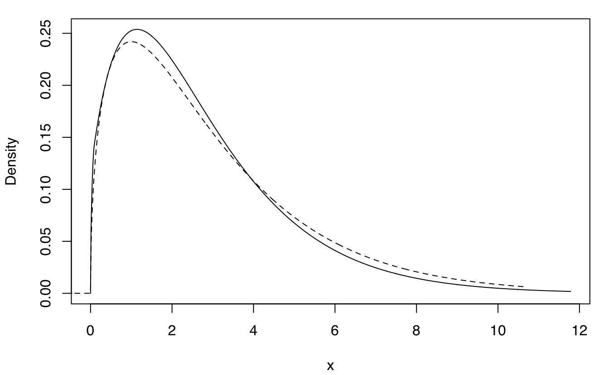
plot(dens, what = "density", data = x, breaks = 15)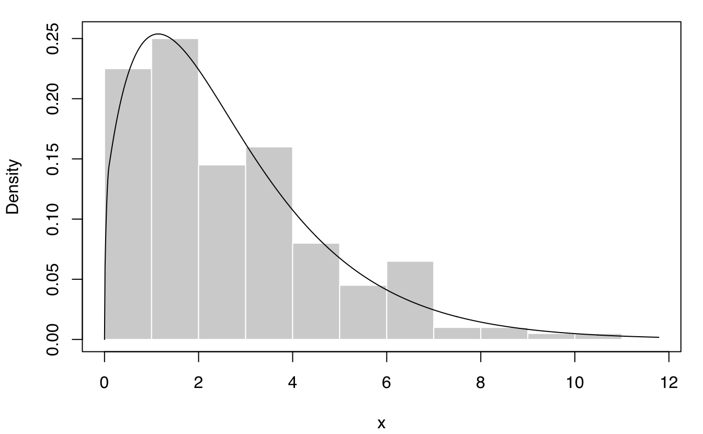
Univariate case with lower & upper bounds
x <- rbeta(200, 5, 1.5)
xgrid <- seq(-0.1, 1.1, length=1000)
f <- dbeta(xgrid, 5, 1.5) # true density
dens <- densityMclustBounded(x, lbound = 0, ubound = 1)
summary(dens, parameters = TRUE)
## ── Density estimation for bounded data via GMMs ───────────
##
## Boundaries: x
## lower 0
## upper 1
##
## Model E (univariate, equal variance) model with 1 component
## on the transformation scale:
##
## log-likelihood n df BIC ICL
## 120.4011 200 3 224.9072 224.9072
##
## x
## Range-power transformation: -0.2200992
##
## Mixing probabilities:
## 1
## 1
##
## Means:
## 1
## 1.152107
##
## Variances:
## 1
## 0.5212129
plot(dens, what = "density")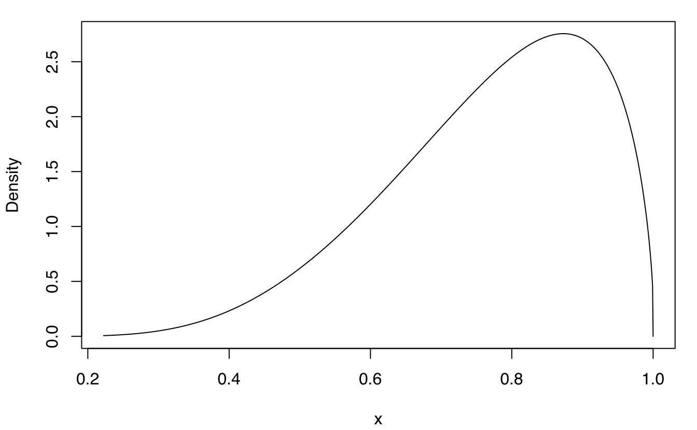
plot(dens, what = "density", data = x, breaks = 11)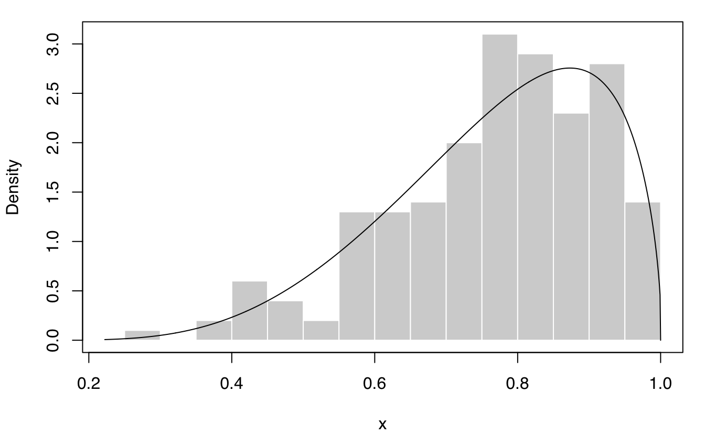
Bivariate case with lower bounds
x1 <- rchisq(200, 3)
x2 <- 0.5*x1 + sqrt(1-0.5^2)*rchisq(200, 5)
x <- cbind(x1, x2)
dens <- densityMclustBounded(x, lbound = c(0,0))
summary(dens, parameters = TRUE)
## ── Density estimation for bounded data via GMMs ───────────
##
## Boundaries: x1 x2
## lower 0 0
## upper Inf Inf
##
## Model VEE (ellipsoidal, equal shape and orientation) model with 1 component
## on the transformation scale:
##
## log-likelihood n df BIC ICL
## -889.6179 200 7 -1816.324 -1816.324
##
## x1 x2
## Range-power transformation: 0.3060001 0.2725328
##
## Mixing probabilities:
## 1
## 1
##
## Means:
## [,1]
## x1 1.051800
## x2 2.111525
##
## Variances:
## [,,1]
## x1 x2
## x1 1.2880789 0.3716033
## x2 0.3716033 0.7138729
plot(dens, what = "BIC")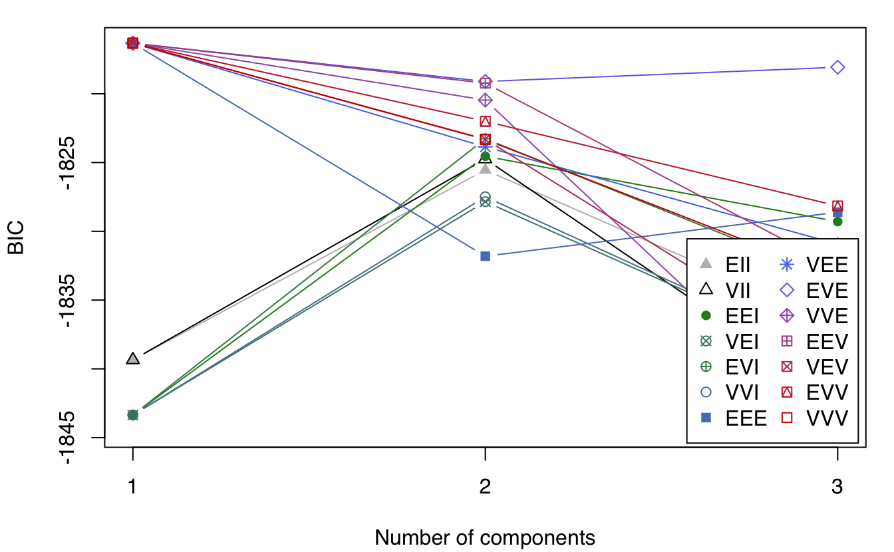
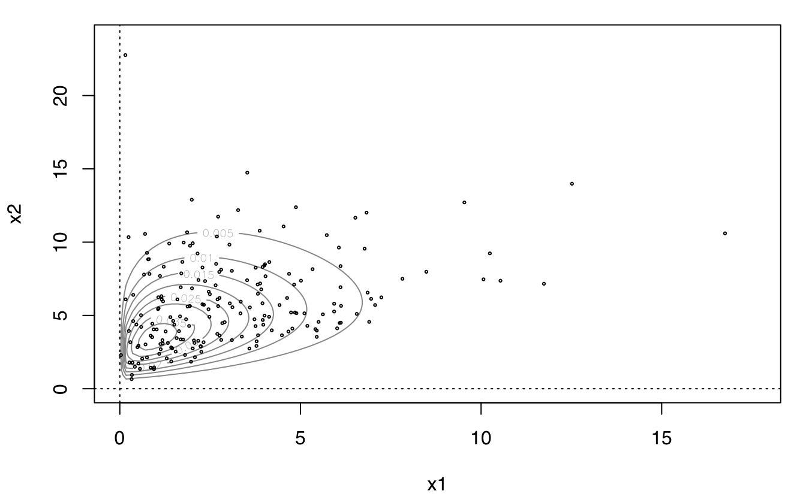
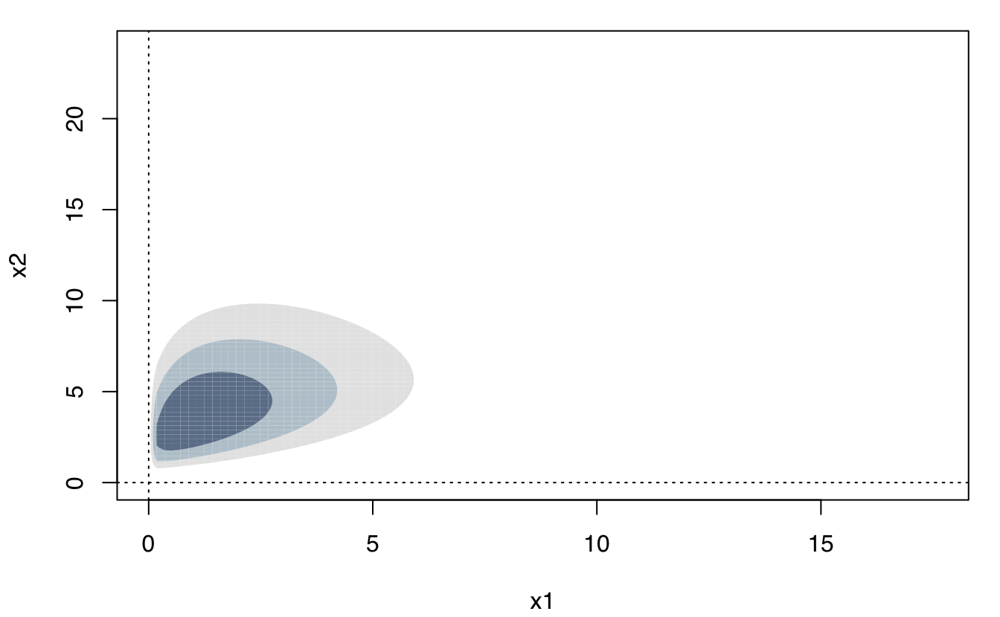
plot(dens, what = "density", type = "persp")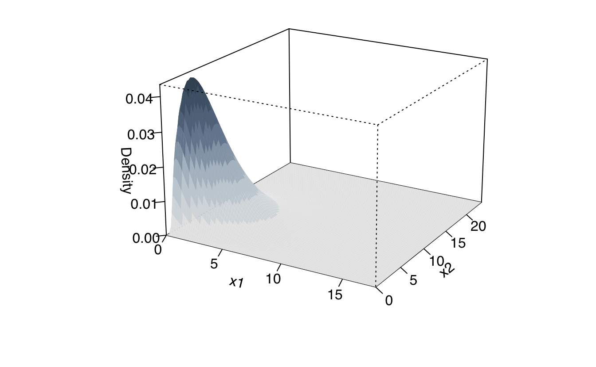
Suicide data
The data consist in the lengths of 86 spells of psychiatric treatment undergone by control patients in a suicide study (Silverman, 1986).
data("suicide")
dens <- densityMclustBounded(suicide, lbound = 0)
summary(dens, parameters = TRUE)
## ── Density estimation for bounded data via GMMs ───────────
##
## Boundaries: suicide
## lower 0
## upper Inf
##
## Model E (univariate, equal variance) model with 1 component
## on the transformation scale:
##
## log-likelihood n df BIC ICL
## -497.8204 86 3 -1009.004 -1009.004
##
## suicide
## Range-power transformation: 0.1929267
##
## Mixing probabilities:
## 1
## 1
##
## Means:
## 1
## 6.700073
##
## Variances:
## 1
## 7.788326
plot(dens, what = "density",
lwd = 2, col = "dodgerblue2",
data = suicide, breaks = 15,
xlab = "Length of psychiatric treatment")
rug(suicide)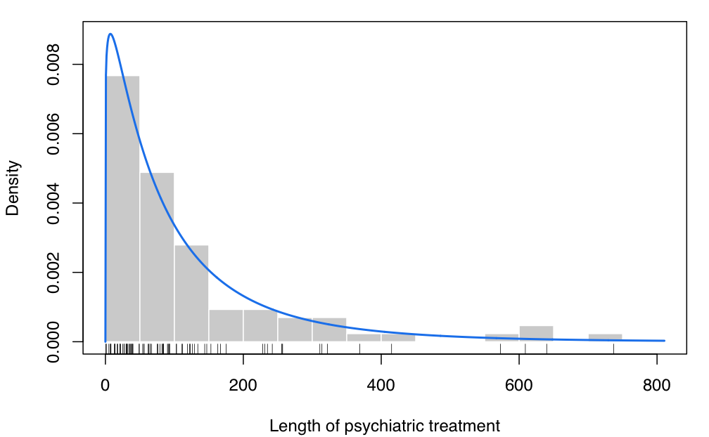
Racial data
This dataset provides the proportion of white student enrollment in 56 school districts in Nassau County (Long Island, New York), for the 1992-1993 school year (Simonoff 1996, Sec. 3.2).
data("racial")
x <- racial$PropWhite
dens <- densityMclustBounded(x, lbound = 0, ubound = 1)
summary(dens, parameters = TRUE)
## ── Density estimation for bounded data via GMMs ───────────
##
## Boundaries: x
## lower 0
## upper 1
##
## Model E (univariate, equal variance) model with 1 component
## on the transformation scale:
##
## log-likelihood n df BIC ICL
## 42.4598 56 3 72.84355 72.84355
##
## x
## Range-power transformation: 0.3869476
##
## Mixing probabilities:
## 1
## 1
##
## Means:
## 1
## 2.795429
##
## Variances:
## 1
## 5.253254
plot(dens, what = "density",
lwd = 2, col = "dodgerblue2",
data = x, breaks = 15,
xlab = "Proportion of white student enrolled in schools")
rug(x)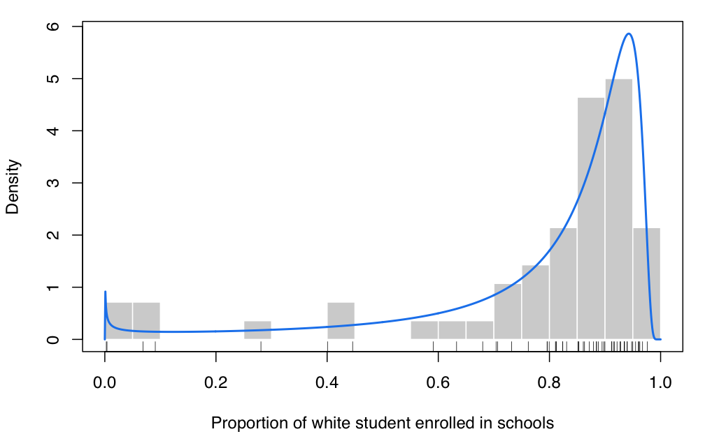
Modal clustering using MEM algorithm for Gaussian mixtures
Simulated datasets
data(Baudry_etal_2010_JCGS_examples, package = "mclust")
GMM <- Mclust(ex4.1)
plot(GMM, what = "classification")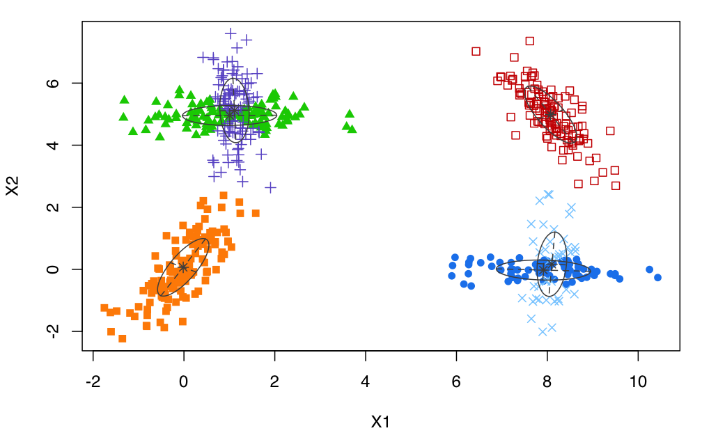
MEM <- MclustMEM(GMM)
summary(MEM)
## ── Modal EM for GMMs ───────────────────
##
## Data dimensions = 600 x 2
## Mclust model = EEV,6
## MEM iterations = 17
## Number of modes = 4
##
## Modes:
## X1 X2
## mode1 8.06741504 -0.01772230
## mode2 8.07370160 4.98485099
## mode3 1.10622966 4.97230749
## mode4 -0.01639289 0.06464381
##
## Modal clustering:
## 1 2 3 4
## 118 122 228 132
plot(MEM)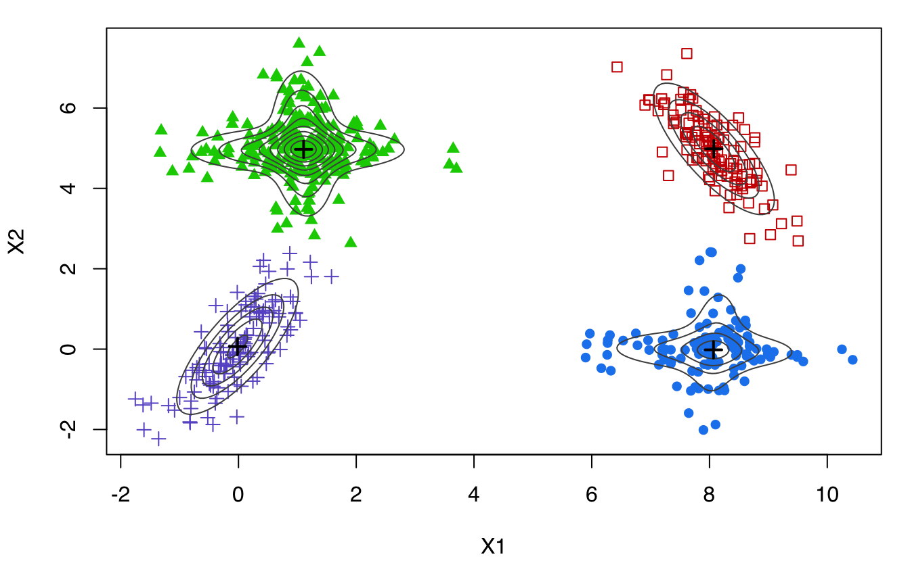
plot(MEM, addPoints = FALSE)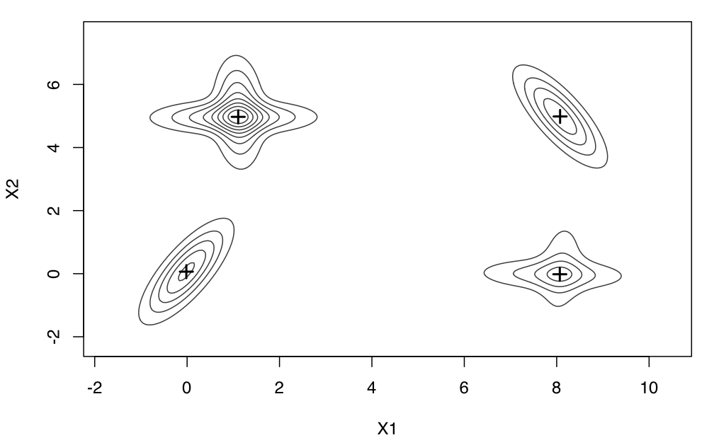
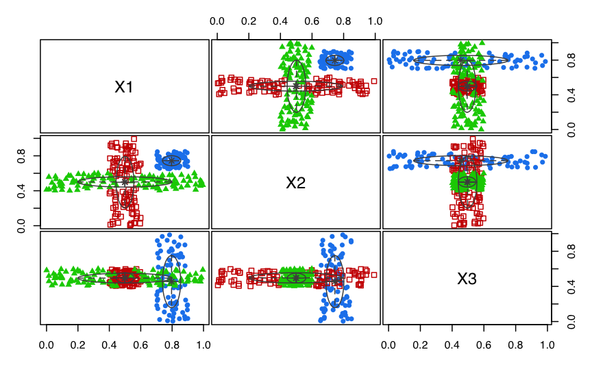
MEM <- MclustMEM(GMM)
summary(MEM)
## ── Modal EM for GMMs ───────────────────
##
## Data dimensions = 300 x 3
## Mclust model = EVI,3
## MEM iterations = 15
## Number of modes = 2
##
## Modes:
## X1 X2 X3
## mode1 0.7964915 0.7444244 0.4547285
## mode2 0.4996361 0.5014374 0.4957522
##
## Modal clustering:
## 1 2
## 78 222
plot(MEM)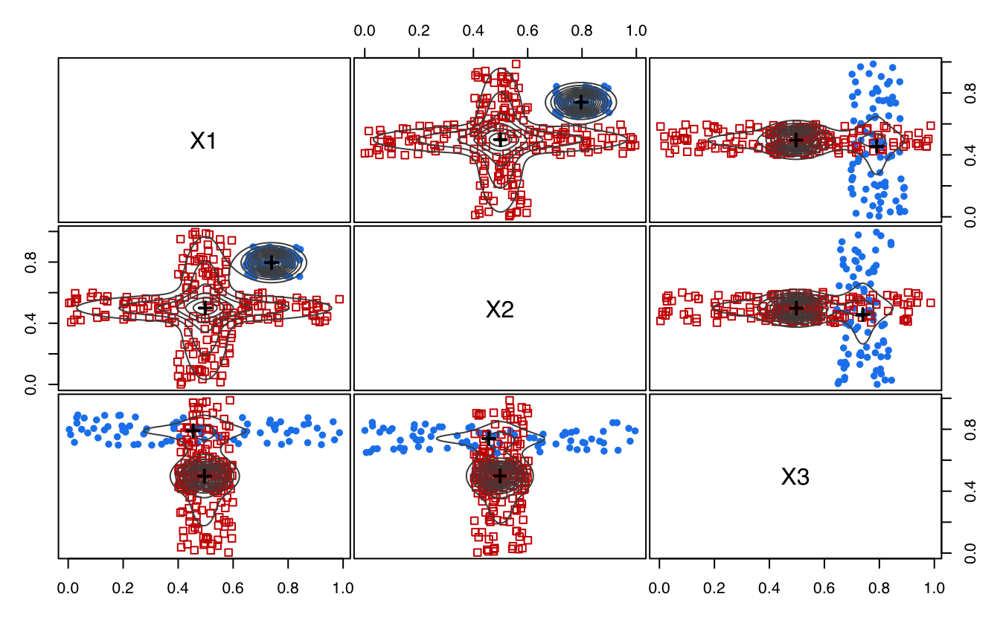
plot(MEM, addDensity = FALSE)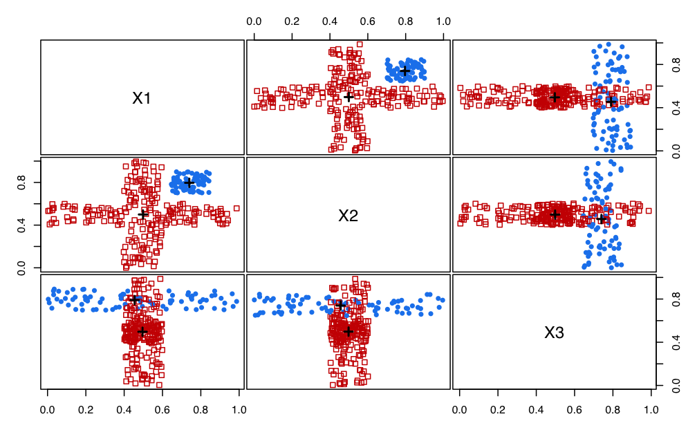
Entropy estimation
Simulated data
Univariate Gaussian
EntropyGauss(1) # population entropy
## [1] 1.418939
x = rnorm(1000) # generate sample
EntropyGauss(var(x)) # sample entropy assuming Gaussian distribution
## [1] 1.384565
mod = densityMclust(x, plot = FALSE)
EntropyGMM(mod) # GMM-based entropy estimate
## [1] 1.384065
plot(mod, what = "density", data = x, breaks = 31); rug(x)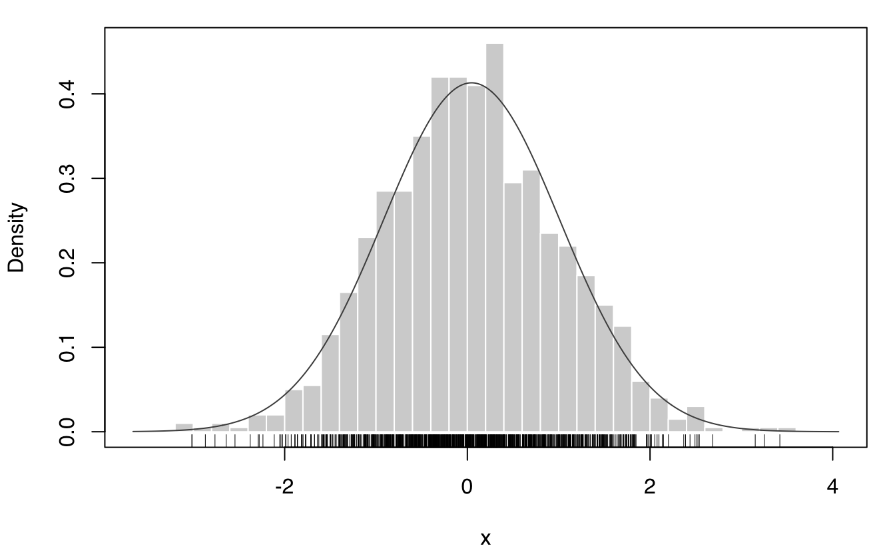
Univariate Mixed-Gaussian
Consider the mixed-Gaussian distribution
,
whose entropy is 2.051939 in the population.
cl = rbinom(1000, size = 1, prob = 0.5)
x = ifelse(cl == 1, rnorm(1000, 2, 1), rnorm(1000, -2, 1)) # generate sample
mod = densityMclust(x, plot = FALSE)
EntropyGMM(mod) # GMM-based entropy estimate
## [1] 2.037679
plot(mod, what = "density", data = x, breaks = 31); rug(x)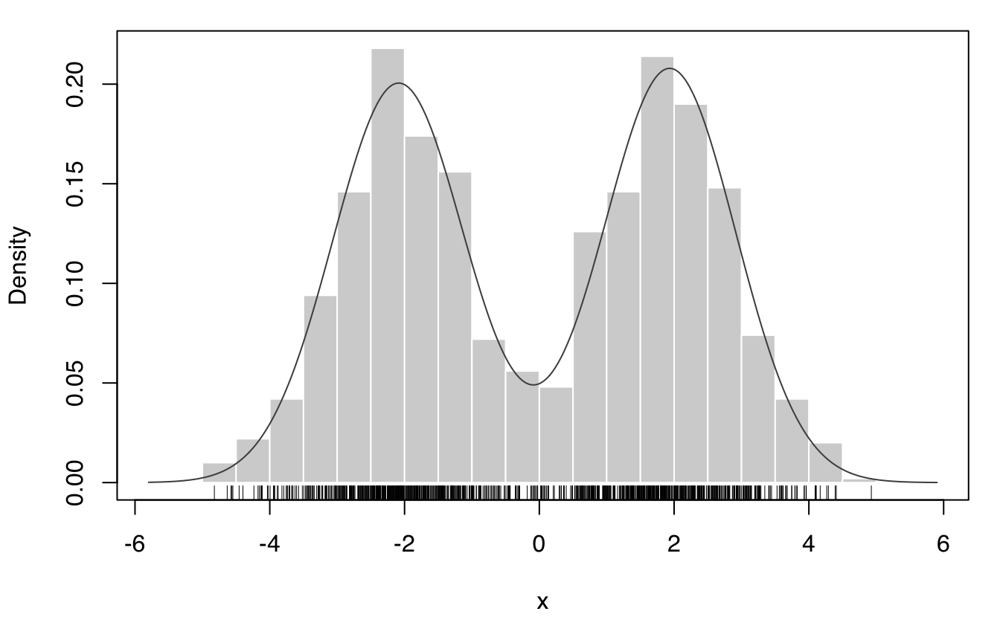
Multivariate Chi-squared
Consider a 10-dimensional independent
distribution, whose entropy is 24.23095 in the population.
x = matrix(rchisq(1000*10, df = 5), nrow = 1000, ncol = 10)
mod1 = densityMclust(x, plot = FALSE)
EntropyGMM(mod1) # GMM-based entropy estimate, not too bad but...
## [1] 25.01403
mod2 = densityMclustBounded(x, lbound = rep(0,10))
EntropyGMM(mod2) # much more accurate
## [1] 24.22231Faithful data
data(faithful)
mod = densityMclust(faithful, plot = FALSE)
EntropyGMM(mod) # GMM-based entropy estimate
## [1] 4.140889
# or provide the data and fit GMM implicitly
EntropyGMM(faithful)
## [1] 4.140889Iris data
data(iris)
mod = densityMclust(iris[,1:4], plot = FALSE)
EntropyGMM(mod) # GMM-based entropy estimate
## [1] 1.438173Volatility analysis of financial log-returns
Gold price 2023 data
data(gold)
head(gold)
## date log.returns
## 1 2023-01-03 0.0109308628
## 2 2023-01-04 0.0070955464
## 3 2023-01-05 -0.0097625244
## 4 2023-01-06 0.0158964701
## 5 2023-01-09 0.0045492333
## 6 2023-01-10 -0.0005875467
# GMM modeling
mod = GMMlogreturn(gold$log.returns)
summary(mod)
## ── Log-returns density estimation via Gaussian finite mixture modeling ─────────
## Model: GMM(V,2)
## Prior: defaultPrior()
##
## log-likelihood n df BIC Entropy
## 852.46 250 5 1677.3 -3.4098
##
## Mixture parameters:
## Prob Mean StDev
## 1 0.52433 0.00029069 0.0045432
## 2 0.47567 0.00073238 0.0107633
##
## Marginal statistics:
## Mean StDev Skewness Kurtosis VaR ES
## 0.00050079 0.0081227 0.058714 4.5584 0.012877 0.017929
plot(mod, what = "BIC")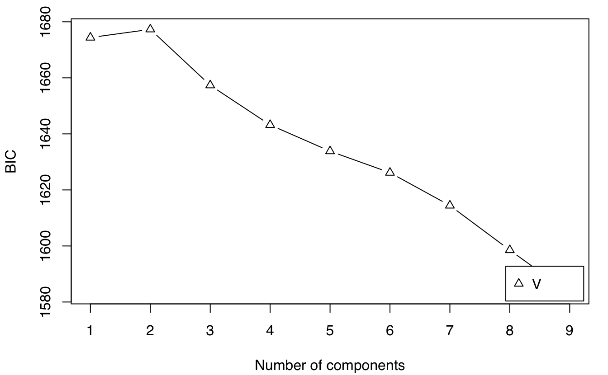
plot(mod, what = "density", data = gold$log.returns)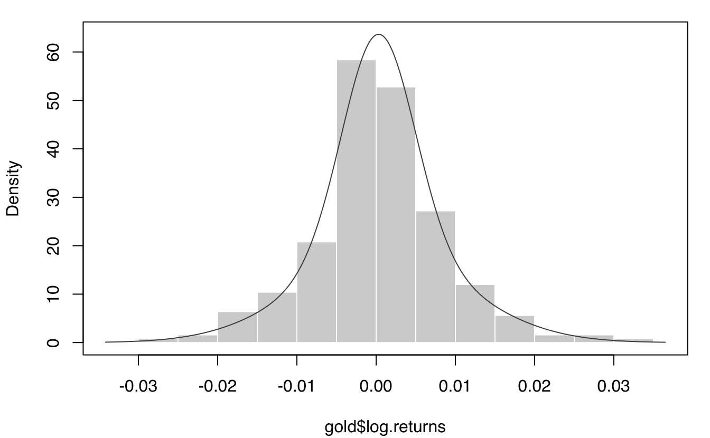
plot(mod, what = "diagnostic")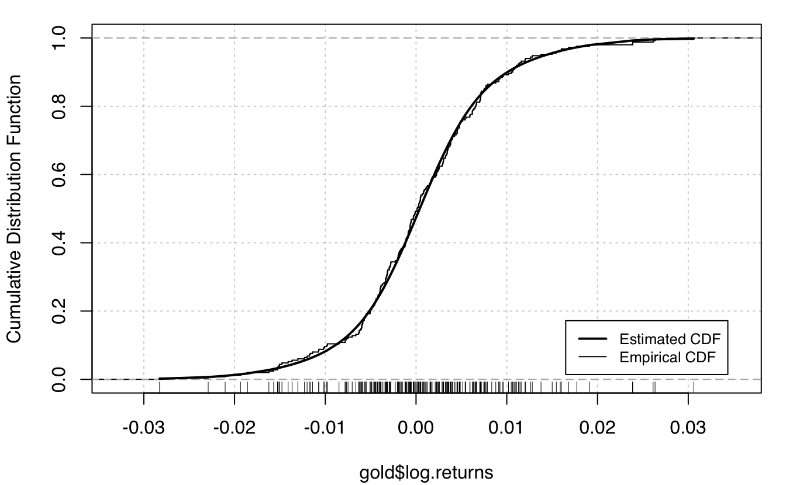
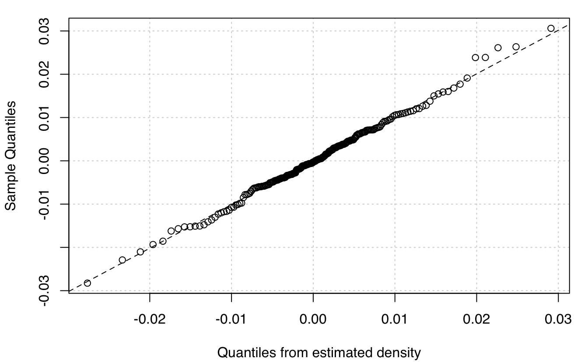
# compare to single Gaussian model
mod1 = GMMlogreturn(gold$log.returns, G = 1)
y0 = extendrange(mod$data, f = 0.1)
y0 = seq(min(y0), max(y0), length = 1000)
plot(mod, what = "density", data = gold$log.returns, col = "steelblue",
xlab = "Gold price log-returns", ylab = "Density")
lines(y0, predict(mod1, what = "dens", newdata = y0), col = "red3")
legend("topright", legend = c("Gaussian", "GMM"), lty = c(1,1),
col = c("red3", "steelblue"), inset = 0.02)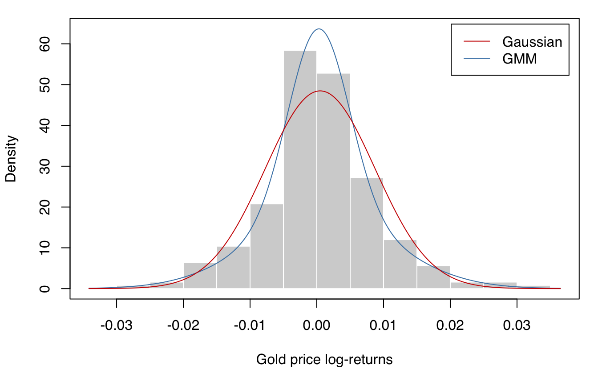
References
Scrucca L., Fraley C., Murphy T. B. and Raftery A. E. (2023) Model-Based Clustering, Classification, and Density Estimation Using mclust in R. Chapman & Hall/CRC, ISBN: 978-1032234953, https://mclust-org.github.io/book/
Scrucca L., Fop M., Murphy T. B. and Raftery A. E. (2016) mclust 5: clustering, classification and density estimation using Gaussian finite mixture models. The R Journal 8/1, pp. 289-317. https://doi.org/10.32614/RJ-2016-021
Scrucca L. (2019) A transformation-based approach to Gaussian mixture density estimation for bounded data, Biometrical Journal, 61:4, 873–888. https://doi.org/10.1002/bimj.201800174
Scrucca L. (2021) A fast and efficient Modal EM algorithm for Gaussian mixtures. Statistical Analysis and Data Mining, 14:4, 305–314. https://doi.org/10.1002/sam.11527
Robin S. and Scrucca L. (2023) Mixture-based estimation of entropy. Computational Statistics & Data Analysis, 177, 107582. https://doi.org/10.1016/j.csda.2022.107582
sessionInfo()
## R version 4.5.2 (2025-10-31)
## Platform: aarch64-apple-darwin20
## Running under: macOS Sequoia 15.6.1
##
## Matrix products: default
## BLAS: /System/Library/Frameworks/Accelerate.framework/Versions/A/Frameworks/vecLib.framework/Versions/A/libBLAS.dylib
## LAPACK: /Library/Frameworks/R.framework/Versions/4.5-arm64/Resources/lib/libRlapack.dylib; LAPACK version 3.12.1
##
## locale:
## [1] en_US.UTF-8/en_US.UTF-8/en_US.UTF-8/C/en_US.UTF-8/en_US.UTF-8
##
## time zone: Europe/Rome
## tzcode source: internal
##
## attached base packages:
## [1] stats graphics grDevices utils datasets methods base
##
## other attached packages:
## [1] mclustAddons_0.10 mclust_6.1.2 knitr_1.50
##
## loaded via a namespace (and not attached):
## [1] doParallel_1.0.17 cli_3.6.5 rlang_1.1.6 xfun_0.53
## [5] jsonlite_2.0.0 rngtools_1.5.2 htmltools_0.5.8.1 sass_0.4.10
## [9] rmarkdown_2.30 evaluate_1.0.5 jquerylib_0.1.4 fastmap_1.2.0
## [13] yaml_2.3.10 foreach_1.5.2 lifecycle_1.0.4 doRNG_1.8.6.2
## [17] compiler_4.5.2 codetools_0.2-20 fs_1.6.6 htmlwidgets_1.6.4
## [21] Rcpp_1.1.0 rstudioapi_0.17.1 digest_0.6.37 R6_2.6.1
## [25] parallel_4.5.2 bslib_0.9.0 tools_4.5.2 iterators_1.0.14
## [29] pkgdown_2.1.3 cachem_1.1.0 desc_1.4.3